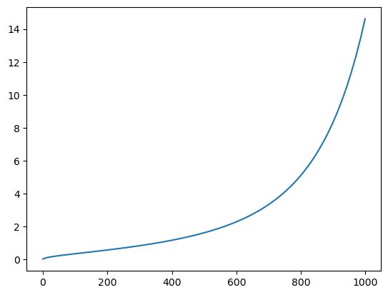

# !pip install -Uq diffusers transformers fastcoreHistorically, I’ve moved relatively quickly through any self-paced tutorials or classes that I’ve taken. I feel like I get the concepts, and can implement them in a few test cases, then it’s on to the next thing.
This hasn’t been an ideal approach.
About 3 years ago I convinced my boss to transition the firm from AutoCAD to Revit for all our projects, mostly so that I’d never have to type out a window schedule by hand again. Neither of us had ever touched it, and at the time the firm consisted of just myself and my boss.
I won’t bore you with the specifics, but after many tutorials and a decent amount of time wrestling with it, we had fully made the jump, and I was feeling really comfortable with my level of proficiency.
It wasn’t until we started training new hires to use it that I realized I had missed some foundational understanding of how the program worked under the hood. I could make it do the things I wanted, but I couldn’t quite explain why right off the bat.
Explaining it to someone else truly deepened my own comprehension and improved my workflow and understanding of what it could do significantly.
So, with that in mind I’m going to try to get ahead of that curve and do the same thing here. In future posts I hope to revisit and maybe refactor some of my old code from the first part of the course, but for the moment we’re going to hop in where I’m at:
Creating a Stable Diffusion Pipeline from Components
import torch
from transformers import CLIPTextModel, CLIPTokenizer
import matplotlib.pyplot as plt
from tqdm.auto import tqdm
from PIL import Image
import logging
1logging.disable(logging.WARNING)
torch.manual_seed(1);- 1
- While quite helpful in any other situation, huggingface warnings will make this notebook fairly ugly, so for the time being, we’re disabling it.
CLIP Tokenizer and Text Encoder
First we’re going to load in a text_encoder and tokenizer. These are from the text portion of a CLIP model, and we’re going to use the weights available from OpenAI.
These will handle tokenizing our text and allow us to get the embeddings for our text prompt.
tokenizer = CLIPTokenizer.from_pretrained("openai/clip-vit-large-patch14", torch_dtype=torch.float16)
text_encoder = CLIPTextModel.from_pretrained("openai/clip-vit-large-patch14", torch_dtype=torch.float16).to("cuda")VAE and UNET
The next step is to load in our vae and unet.
from diffusers import AutoencoderKL, UNet2DConditionModelvae = AutoencoderKL.from_pretrained("stabilityai/sd-vae-ft-ema", torch_dtype=torch.float16).to("cuda")
unet = UNet2DConditionModel.from_pretrained("CompVis/stable-diffusion-v1-4", subfolder="unet", torch_dtype=torch.float16).to("cuda")Scheduling
Next we’ll have to add a scheduler. The scheduler creates a schedule by: - Defining the number of noising steps - Defining the amount of noise added at each step
These are derived from the beta parameters, which we’ll pass in below
It’s important to note that when scheduling, we have to make sure to use the same noising schedule that was used during training
from diffusers import LMSDiscreteSchedulerscheduler = LMSDiscreteScheduler(num_train_timesteps=1000, beta_start=0.00085, beta_end=0.012, beta_schedule="scaled_linear")Parameters for Generation
We’re now going to define the parameters that we’ll use for generation
prompt = ["a photograph of a beautiful mountain landscape"]
height = 512
width = 512
num_inference_steps = 70
guidance_scale = 7.5
batch_size = 1Tokenizing the Prompt
Next we’re going to tokenize the prompt using our tokenizer.
The model is going to require the same number of tokens for every prompt to optimize processing on the GPU. The GPU generally likes matrices to be the same size, so I have a feeling this is something that’s going to be a recurring theme for optimization.
text_input = tokenizer(
prompt, padding="max_length", max_length=tokenizer.model_max_length,
truncation=True, return_tensors="pt"
)text_input['input_ids']tensor([[49406, 320, 8853, 539, 320, 1215, 3965, 5727, 49407, 49407,
49407, 49407, 49407, 49407, 49407, 49407, 49407, 49407, 49407, 49407,
49407, 49407, 49407, 49407, 49407, 49407, 49407, 49407, 49407, 49407,
49407, 49407, 49407, 49407, 49407, 49407, 49407, 49407, 49407, 49407,
49407, 49407, 49407, 49407, 49407, 49407, 49407, 49407, 49407, 49407,
49407, 49407, 49407, 49407, 49407, 49407, 49407, 49407, 49407, 49407,
49407, 49407, 49407, 49407, 49407, 49407, 49407, 49407, 49407, 49407,
49407, 49407, 49407, 49407, 49407, 49407, 49407]])Above are our tokens, with each number representing our input, with the exception of 49407, which is our padding
tokenizer.decode(49407)'<|endoftext|>'As illustrated above, our padding is just an ‘<|endoftext|>’ marker
And if we look at the attention_mask, we can see that it’s doing its job by representing our padding tokens that we’re not interested in as 0’s
text_input['attention_mask']tensor([[1, 1, 1, 1, 1, 1, 1, 1, 1, 0, 0, 0, 0, 0, 0, 0, 0, 0, 0, 0, 0, 0, 0, 0,
0, 0, 0, 0, 0, 0, 0, 0, 0, 0, 0, 0, 0, 0, 0, 0, 0, 0, 0, 0, 0, 0, 0, 0,
0, 0, 0, 0, 0, 0, 0, 0, 0, 0, 0, 0, 0, 0, 0, 0, 0, 0, 0, 0, 0, 0, 0, 0,
0, 0, 0, 0, 0]])Getting Text Embeddings
Now we can get the text embeddings for our prompt by using the text_encoder
text_embeddings = text_encoder(text_input.input_ids.to("cuda"))[0].half()
text_embeddings.shapetorch.Size([1, 77, 768])Get Unconditioned Text Embeddings
We’re also going to get the embeddings needed to perform unconditional generation. Basically let the model do whatever it wants, so long as the end result is a decent-looking image.
We’re going to do this by simply using an empty string, "". The embeddings from this are what we’ll use in Classifier-Free Guidance
max_length = text_input.input_ids.shape[-1]
uncond_input = tokenizer(
[""] * batch_size, padding="max_length", max_length=max_length, return_tensors="pt"
)
uncond_embeddings = text_encoder(uncond_input.input_ids.to("cuda"))[0].half()
uncond_embeddings.shapetorch.Size([1, 77, 768])There will need to be two forward passes for Classifer-Free Guidance: 1. The conditioned input(text_embeddings) 1. The unconditioned input(uncond_embeddings)
We can actually roll them into one by concatenating both to a single batch:
Concatenate Conditioned and Unconditioned Text Embeddings
text_embeddings = torch.cat([uncond_embeddings, text_embeddings])Create Initial Noise
Next we’ll have to create our initial Gaussian noise, which will be our initial latents.
Our latent shape is going to be 4x4x64, which will be decoded to our desired 3x512x512 after the denoising process is completed.
torch.manual_seed(255)
latents = torch.randn((batch_size, unet.in_channels, height // 8, width //8))
latents = latents.to("cuda").half()
latents.shapetorch.Size([1, 4, 64, 64])Initializing the Scheduler and Scaling the Noise
We’re going to initialize our scheduler with the num_inference_steps we chose earlier
scheduler.set_timesteps(num_inference_steps)After initializing the scheduler, we need to scale the initial noise by the standard deviation that’s required by the scheduler.
This values is going to change depending on what scheduler is used
latents = latents * scheduler.init_noise_sigmaWriting the Denoising Loop
scheduler.timestepstensor([999.0000, 984.5217, 970.0435, 955.5652, 941.0870, 926.6087, 912.1304,
897.6522, 883.1739, 868.6957, 854.2174, 839.7391, 825.2609, 810.7826,
796.3043, 781.8261, 767.3478, 752.8696, 738.3913, 723.9130, 709.4348,
694.9565, 680.4783, 666.0000, 651.5217, 637.0435, 622.5652, 608.0870,
593.6087, 579.1304, 564.6522, 550.1739, 535.6957, 521.2174, 506.7391,
492.2609, 477.7826, 463.3043, 448.8261, 434.3478, 419.8696, 405.3913,
390.9130, 376.4348, 361.9565, 347.4783, 333.0000, 318.5217, 304.0435,
289.5652, 275.0870, 260.6087, 246.1304, 231.6522, 217.1739, 202.6957,
188.2174, 173.7391, 159.2609, 144.7826, 130.3043, 115.8261, 101.3478,
86.8696, 72.3913, 57.9130, 43.4348, 28.9565, 14.4783, 0.0000],
dtype=torch.float64)As shown above, our scheduler has a specific schedule of steps going from 999 to 0(matching the 1000 steps that were used during training)
scheduler.sigmastensor([14.6146, 13.3974, 12.3033, 11.3184, 10.4301, 9.6279, 8.9020, 8.2443,
7.6472, 7.1044, 6.6102, 6.1594, 5.7477, 5.3709, 5.0258, 4.7090,
4.4178, 4.1497, 3.9026, 3.6744, 3.4634, 3.2680, 3.0867, 2.9183,
2.7616, 2.6157, 2.4794, 2.3521, 2.2330, 2.1213, 2.0165, 1.9180,
1.8252, 1.7378, 1.6552, 1.5771, 1.5031, 1.4330, 1.3664, 1.3030,
1.2427, 1.1852, 1.1302, 1.0776, 1.0272, 0.9788, 0.9324, 0.8876,
0.8445, 0.8029, 0.7626, 0.7236, 0.6858, 0.6490, 0.6131, 0.5781,
0.5438, 0.5102, 0.4770, 0.4443, 0.4118, 0.3795, 0.3470, 0.3141,
0.2805, 0.2455, 0.2084, 0.1672, 0.1174, 0.0292, 0.0000])plt.plot(scheduler.timesteps, scheduler.sigmas[:-1]);
Denoising
for i, t in enumerate(tqdm(scheduler.timesteps)):
# create 2 latents, one for the text prompt, and one for the unconditioned prompt
input = torch.cat([latents] * 2)
# scale the noise on the latents
input = scheduler.scale_model_input(input, t)
# predict the noise
with torch.no_grad(): pred = unet(input, t, encoder_hidden_states=text_embeddings).sample
# perform guidance
pred_uncond, pred_text = pred.chunk(2)
pred = pred_uncond + guidance_scale * (pred_text - pred_uncond)
# compute the "previous" noisy sample
latents = scheduler.step(pred, t, latents).prev_sampleDecoding with the VAE
The latents now contain the denoised representation of the image, so all that’s left to do is use our vae to decode it to our pixel image
with torch.no_grad(): image = vae.decode(1 / 0.18215 * latents).samplewith torch.no_grad(): image_bad = vae.decode(1 / 0.125 * latents).sampleDisplaying our Image with PIL
Now we just have to do a bit of wrangling to put our images in a format that PIL can read, and we’re done!
image = (image / 2 + 0.5).clamp(0, 1)
image = image[0].detach().cpu().permute(1, 2, 0).numpy()
image = (image * 255).round().astype("uint8")
Image.fromarray(image)